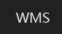

基于Spring Boot的在线考试系统
- 独立项目
- 系统后端基于Spring Boot及Hibernate框架开发，前端利用Bootstrap做移动端适配，实现考试管理及考生考试功能
- 系统分为六大模块，分别是验证模块、考生信息模块、试题管理模块、试卷管理模块、考生考试模块和统计模块
- 系统于暑期实践过程中完成了从需求到编码测试的全过程，提交了测试版本，并在后期经过多次版本迭代，11月作为单位的在线考试系统正式上线使用
- 查看项目代码
视频密码99s9
视频
2017-07
校园递项目
- 合作项目，主要参与需求，详细设计，数据库设计及后端部分代码实现
- 该项目由网页端管理和Android客户端两部分组成，实现校园快递“最后一百米”的C2C配送服务
- 该项目后端基于Spring Boot及Hibernate框架开发，前端主要由Android原生开发实现
- 项目完成度：80%（暂未实现支付模块）
- 查看项目代码
文档
视频
2017-06

资源中心仓库管理系统
- 合作项目，主要参与需求分析，数据库设计及部分后端代码实现
- 系统主要实现中学的仓库管理功能，作为数据库实践课程考核项目并最终获得A评级
- 系统后端基于spring和hibernate框架，前端由Thymeleaf渲染实现
- 查看项目代码
文档
视频
2016-12